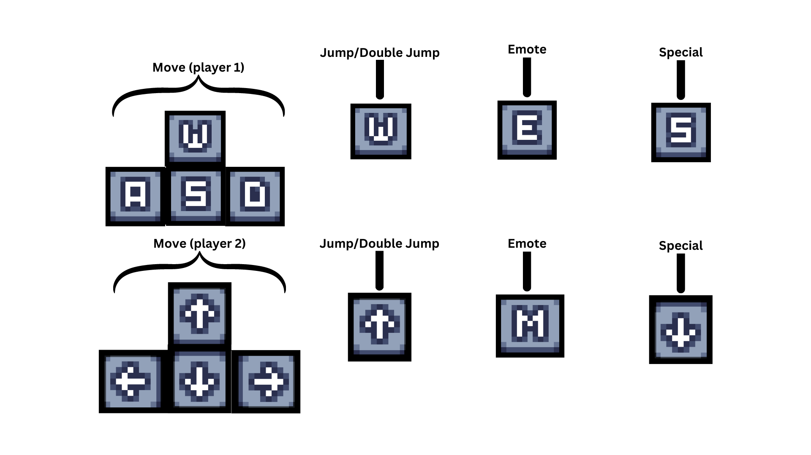
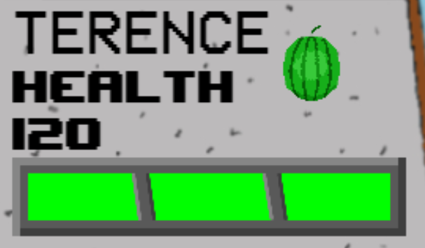
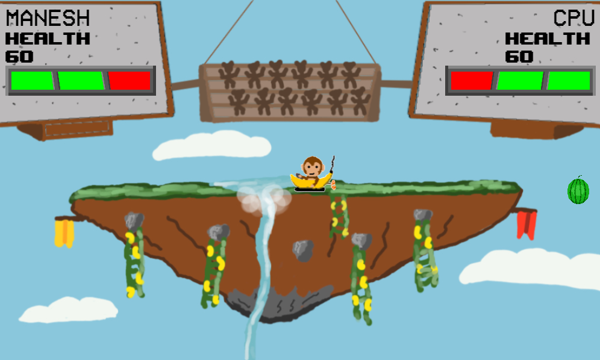
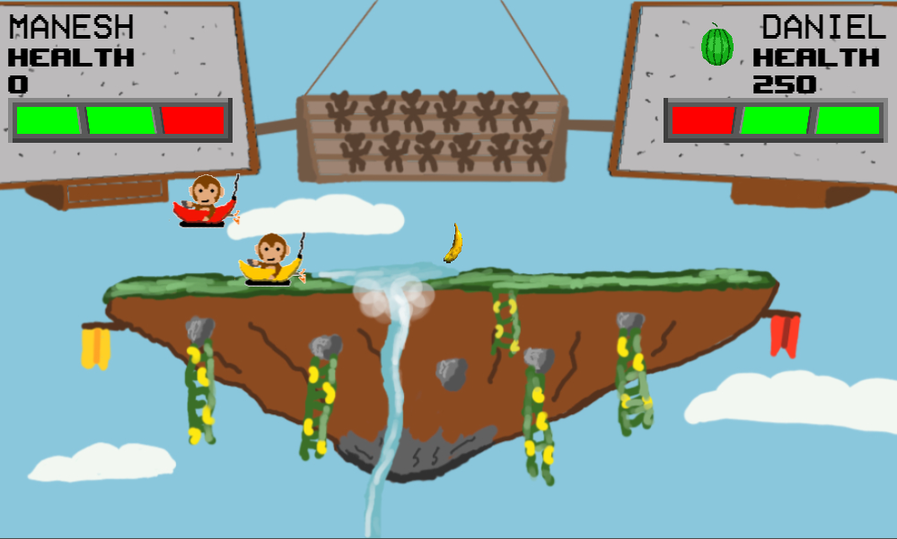
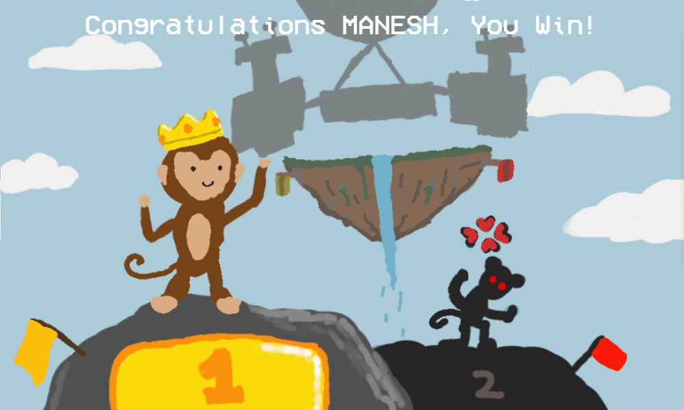
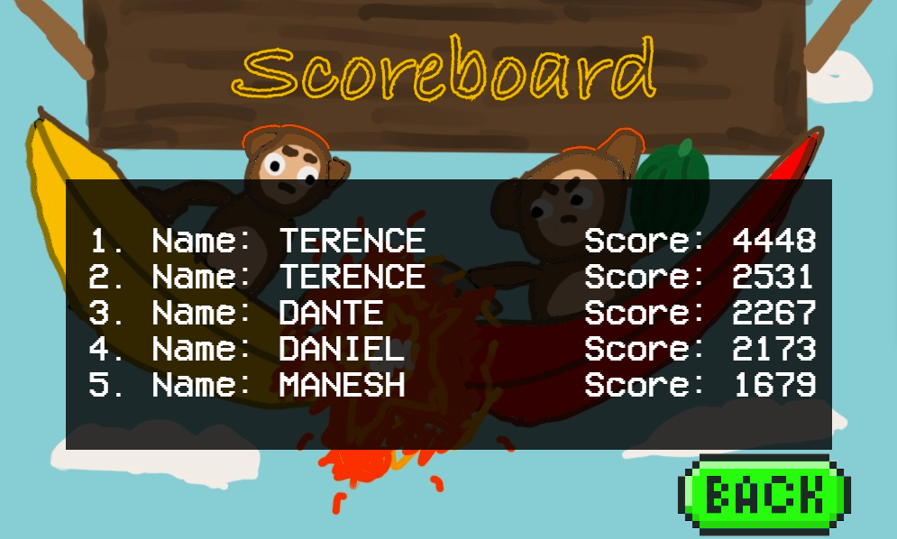

When playing singleplayer or multiplayer,

Since this game includes multiplayer, there will be controls for 2 players. Player 1 will use WASD and E. W to jump and double jump. A and D to move left and right. S is to use the powerup. E is emote while on the ground. Player 2 uses the arrow keys and the m key. Up to jump and double jump. Left and right to move left and right. Down to use the powerup. M to emote while on the ground.
In the game, the player name is displayed in the top corner under that is your health, the higher it is the more knockback you take. The bar at the bottom indicates how many lives you have left. Finally, the watermelon on the right side indicates that you can use the powerup
The powerup can be picked up and is spawned at random intervals. When you touch the watermelon, it gives you the ability to use the powerup. When using the powerup it shoots an object straight down and deals 100 health
Another item that can be picked up is the banana. The banana spawns every 30 seconds. When picked up, it heals 50 health points.
After you win or lose, it will bring you to the win screen. On the win screen it shows who won and to continue playing you need to click the screen.
After completing a round, singleplayer or multiplayer, the scores will go into the scoreboard. This shows the top 5 players in a session game.